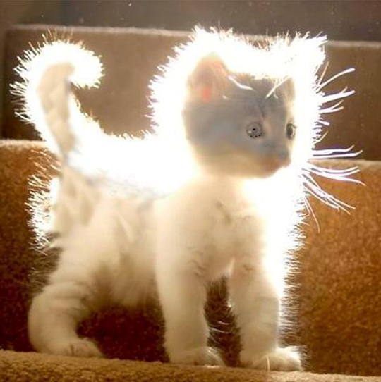
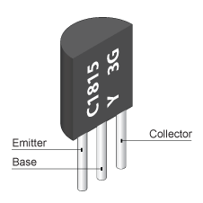

Electricity: A Primer
Audience
People who haven't thought about circuits since school
e.g. Me.
What is it?
Energy resulting from the flow of electrons around a circuit
AC
DC
Ohm's Law
v = i r
v = i r- Voltage, volts - v
- Current, amperes - i
- Resistance, ohms - r
Voltage
Potential difference in a circuit
Amps
- A measurement of current
- Current is charge moving over time
- Charge is measured in columbs
- 1 columb per second
- 1 columb = 6.241×1018 * charge of one proton
Amps
- Columbs are
cin SI units - Amps are
Ain SI units - Ohm refers to Amps as
i - Thanks for nothing SI
Resistors

Resistors
- Limits the flow of current
- Used to reduce voltage in a circuit
- Can come in many forms
How do I use resistors?
How do I use resistors?
- Circuit at 9v
- Examine spec sheet!
- LED needs 20mA
- r = v / i
- r = 9 / 0.02
- r = 450Ω
Ohm's Law
Resistors in series
Resistors in series
Rtotal = R1 + R2 + R3 + ...
Resistors in parallel
Resistors in parallel
1 / Rtotal = (1 / R1) + (1 / R2) + (1 / R3) + ...
Enough theory!
LEDs in series
LEDs in series
Light detector
- Light Dependent Resistor
- Variable resistor
- With light - low resistance (100s of Ω)
- In darkness - high resistance (MΩs)
Light detector
Transistor
Transistor
- Can amplify or switch circuits
- As base resistance varies, current in other circuit varies
- An Arduino can vary voltage using PWM
Enough theory again!
Darkness detector
Recap
- Components require different voltages
- Use resistors to reduce voltage
- Ohm's law
v = i r - Read spec sheets!
Next time at NodeBots of London
- Components
- Hardware debugging
- Communications protocols